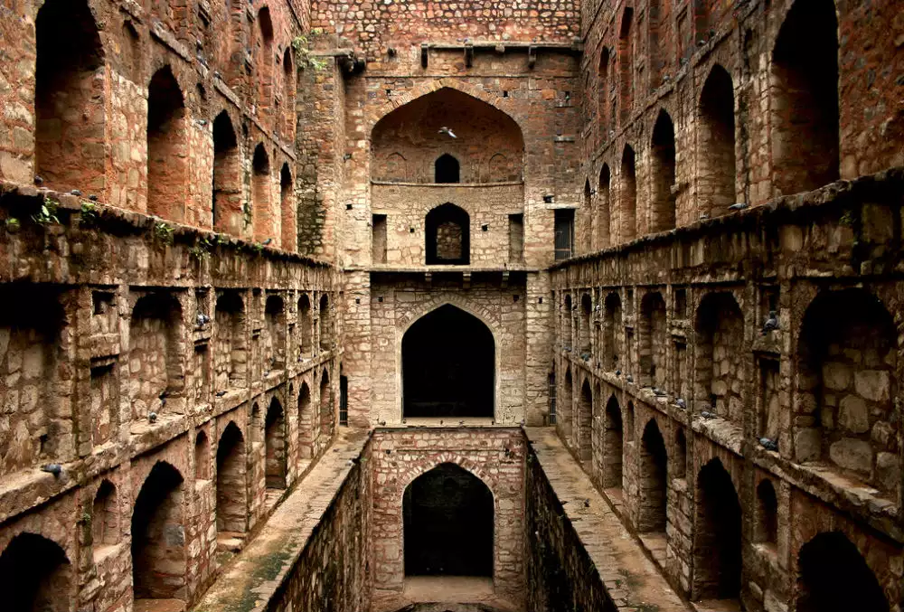

In the heart of the old town stands a house shrouded in mystery and fear, its crumbling walls echoing the secrets of the past. This house, like many others deemed haunted, has a history steeped in tragedy. Over the years, strange occurrences have plagued its halls—whispers in the dead of night, unexplained footsteps, and flickering lights, all signs of restless spirits that are said to reside within. Legends claim that these houses become haunted when souls with unresolved desires or tragic ends refuse to leave. With every passing year, the ghosts grow stronger, their presence felt by those brave enough to enter. Some believe that once a house has been touched by the supernatural, it becomes a permanent home for the otherworldly, trapping both the living and the dead in an eternal dance of fear.
The Haunted House
The haunted house, infamous for its eerie past, is a labyrinth of haunted rooms, each with its own chilling story. The attic, cluttered with forgotten relics, is where footsteps echo late into the night, though no one is there.
Home
Step into the unknown and experience the haunted atmosphere firsthand.
Gallery
Explore chilling images and videos of the most haunted rooms and eerie incidents.
Blog
Read firsthand accounts of paranormal encounters within the haunted house.
Feedback
Share your thoughts and rate your experience exploring the haunted house website.
Discover the most haunted houses across India, each with its own spine-chilling tales of supernatural events. From ancient mansions to abandoned bungalows, these locations are home to ghostly apparitions, eerie noises, and unexplained phenomena. Explore the dark side of India's rich history through these haunted sites, where the past refuses to rest.

Agrasen ki Baoli
This ancient stepwell in Delhi is known for its eerie silence and unsettling vibes. Visitors often report feeling watched, and the deeper you go, the stronger the sense of dread becomes.
Bhangarh Fort
Located in Rajasthan, Bhangarh Fort is infamous for its haunting legends. Forbidden to enter after sunset, it is said to be cursed, with many visitors reporting ghostly encounters and strange incidents.
Malcha Mahal
Hidden in Delhi’s dense forest, Malcha Mahal is shrouded in mystery. Known for its isolation and tragic history, it’s believed to be haunted by the spirits of the former royal residents, adding to its chilling aura.